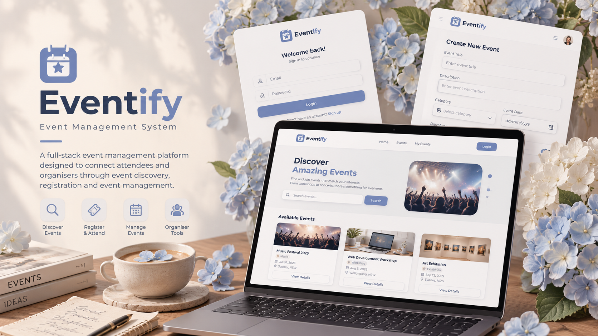
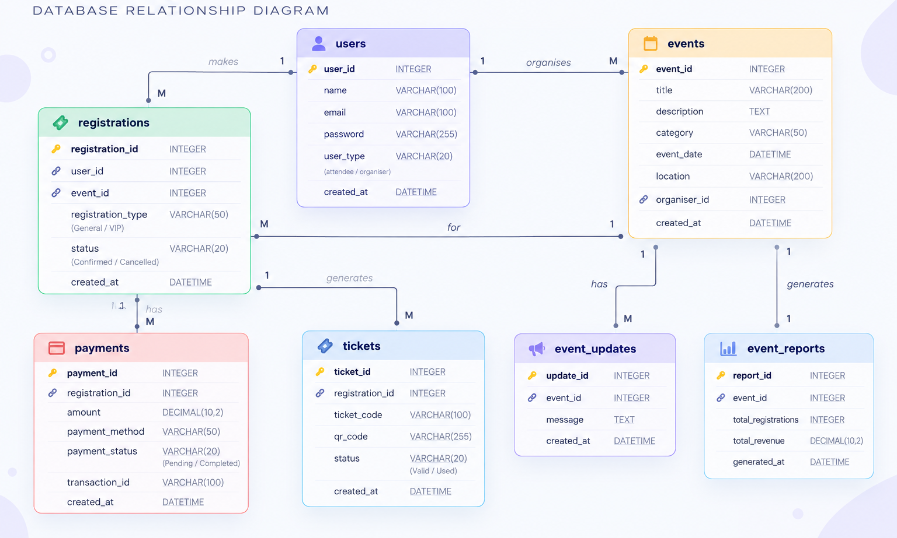
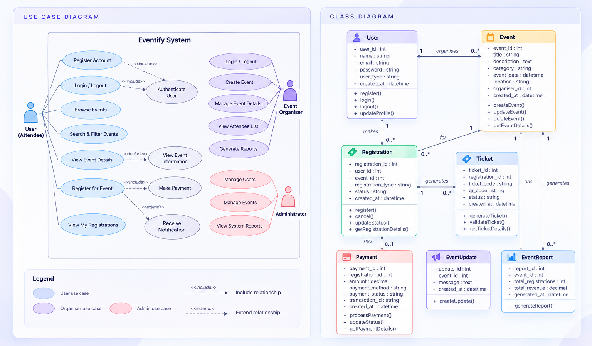
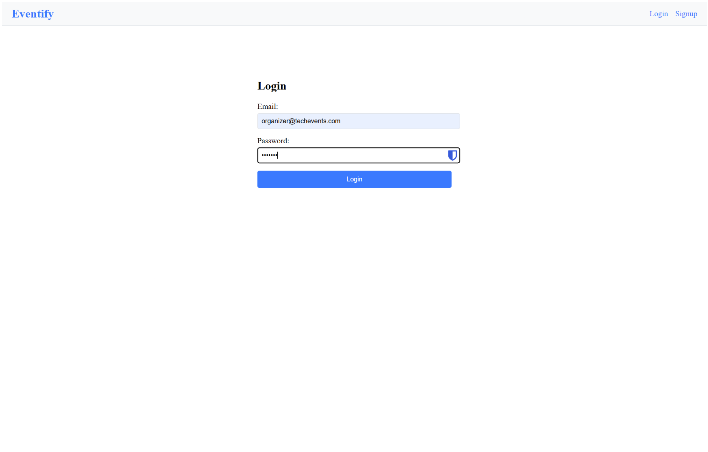
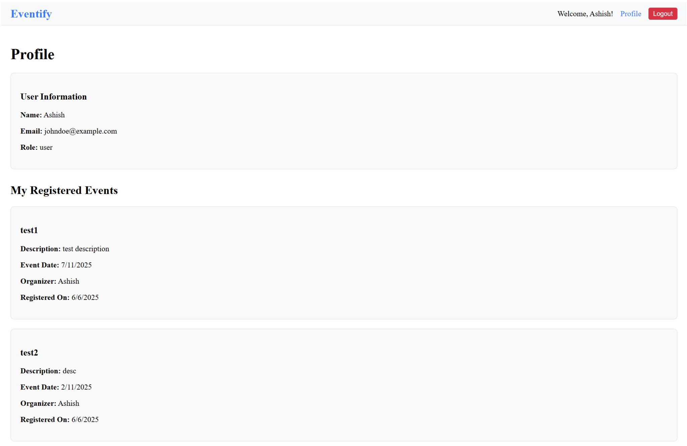
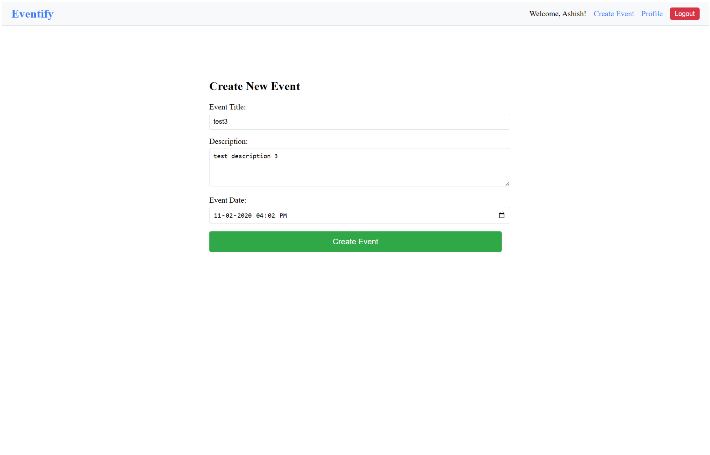
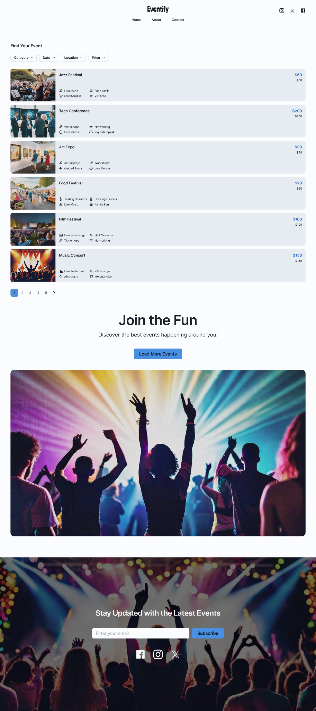
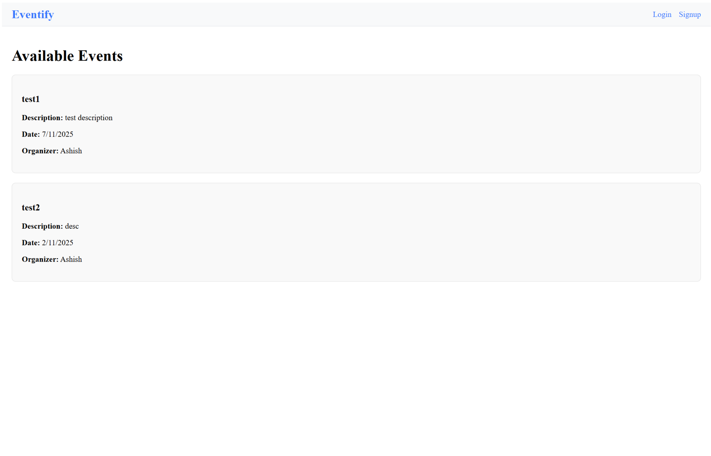

FULL-STACK DEVELOPMENT · TEAM PROJECT
Eventify
A full-stack event management platform designed to connect attendees and organisers through event discovery, registration and event management.

01 · Overview
Simplifying event management
Eventify was developed as a university team project focused on creating a full-stack event management platform for attendees and event organisers.
The system was designed to bring event discovery, registration and management into one platform while exploring full-stack development, database design, authentication and collaborative software development.
Project Details
02 · The Problem
Event management can become fragmented
Managing an event involves more than simply publishing event information. Organisers also need to manage registrations, attendees, tickets and communication throughout the event lifecycle.
For smaller event organisers, these activities can become difficult to manage when they rely on separate tools or manual processes. Eventify explored how these tasks could be brought together within one central platform.
System Goals
Discover Events
Give attendees a simple way to browse and discover available events.
Register & Attend
Allow users to create an account, register for events and keep track of their registrations.
Manage Events
Provide organisers with tools to create events and manage their listings.
Connect the Experience
Bring attendee and organiser workflows together through one full-stack web application.
03 · System Design
Planning the system before development
Before implementation, the team mapped the main entities, user interactions and relationships required to support the event management workflow.
The system was structured around users, events, registrations, tickets and related event information, helping establish how data would move between the attendee and organiser sides of the platform.
Database Design

UML & User Interactions
UML diagrams were also used during planning to map system responsibilities and interactions between attendees, organisers and the main application components.

04 · My Role
Keeping the project organised and moving forward
Eventify was developed as a team project. My main responsibilities focused on process and project management, including task tracking, team collaboration and maintaining meeting records.
I helped track the project's progress against our planned timeline, documented development activities across each iteration and contributed to regular discussions around progress and responsibilities.
This role gave me experience working between the technical development process and the coordination required to keep a software project organised.
05 · Development Process
From requirements to implementation
Plan
Define requirements, project goals and responsibilities across the team.
Design
Develop interface concepts, database structures and system workflows.
Develop
Implement authentication, event functionality and frontend-to-backend integration.
Test & Refine
Test core workflows, resolve integration issues and refine the application.
06 · Technical Implementation
Connecting the frontend, backend and database
Eventify was developed as a full-stack web application using React for the frontend and Flask for the backend. The two layers communicated through API requests, allowing the interface to retrieve and update event and user data.
Authentication was handled using JSON Web Tokens (JWT), while SQLAlchemy was used to manage interactions between the backend and the relational database.
System Architecture
Frontend
React · JavaScript
React Router · Axios
Backend
Python · Flask
REST API · JWT
Database
SQLite
SQLAlchemy ORM
Eventify in action
The final system focused on the core attendee and organiser workflows, from discovering events to managing registrations and creating new events.

Discover Events
The homepage allows visitors to view available events and quickly access the information needed before registering.

Secure Account Access
Users and organisers can create accounts and securely log in, with role-based access controlling the functionality available to each user.

Manage Registrations
After registering for an event, attendees can view their registered events through their profile, keeping their event activity in one place.

Create Events
Organisers have access to event creation tools, allowing them to publish new events that become available through the platform.
07 · Challenges & Iteration
Adapting when the original approach became too complex
One of the biggest challenges during development was integrating the original React frontend with the backend. As the interface grew, the number of interconnected components made integration and version control increasingly difficult.
To prioritise a functional end-to-end system, the team simplified and rebuilt the frontend around the core workflows. This reduced the scope of the final interface, but allowed the essential attendee and organiser functionality to work together successfully.
From Initial Vision to Final Implementation

A more ambitious interface
The initial high-fidelity concept explored a richer event discovery experience with more detailed visual content and functionality.

Prioritising core functionality
The final interface was simplified so the team could focus on reliable frontend-to-backend integration and deliver the core event workflows.
Key Challenges
System Integration
Connecting the frontend, backend and database proved more complex than originally anticipated.
Version Control
Managing changes across interconnected files made collaboration and Git integration more challenging.
Learning as We Built
The team had limited experience with end-to-end integration, requiring additional independent learning throughout development.
08 · What I Learned
Building the system was only part of the challenge
Eventify taught me that successful software development depends on more than completing individual features. Planning, communication and early integration are just as important when multiple parts of a system need to work together.
The challenges we experienced showed me the value of testing frontend and backend integration earlier, keeping the architecture manageable and adjusting the project scope when technical limitations arise.
From a project management perspective, I also gained practical experience tracking progress, documenting decisions and working with a team through changes during development.
Key Takeaways
Integrate Early
Testing connections between different parts of the system earlier can reveal problems before they become expensive to fix.
Keep It Modular
A simpler, modular structure makes development, integration and collaboration easier to manage.
Adapt the Scope
Prioritising a smaller set of working features can be more valuable than attempting to deliver every planned feature.
Communicate Clearly
Regular progress checks and clear responsibilities help a team respond more effectively when the project changes.